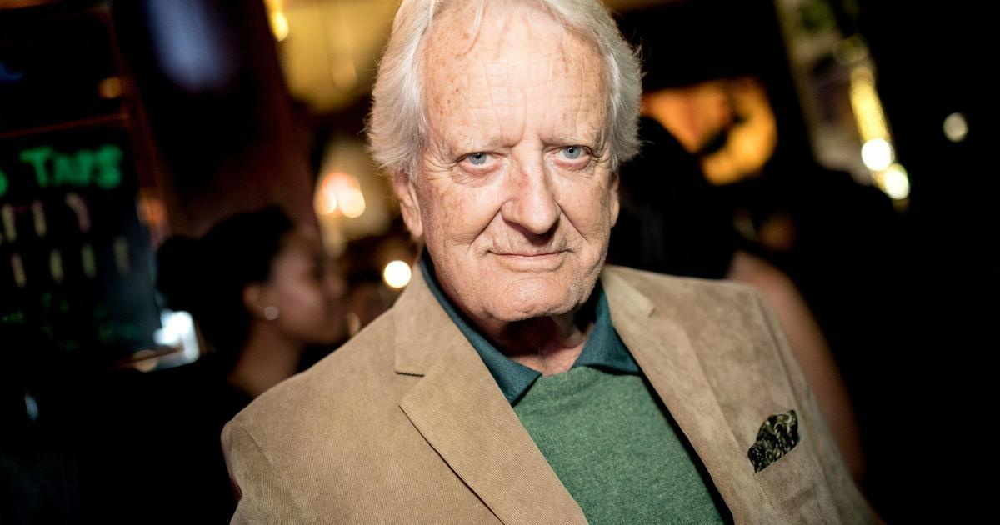

Nicolas Coster, 'Santa Barbara' star, dead at 89(CNN) — Nicolas Coster, a veteran actor known for his work on the daytime dramas "Santa Barbara" and "Another World," died Monday, his daughter announced in a Facebook post. He was 89. "It's with great sadness that I am posting this to my father's book page," Dinneen Coster wrote. "Nicolas Coster passed on this evening in a hospital in Florida. Please remember him as a great artist. He was an actor's actor! I will always be inspired by him and know how lucky I am to have such a great father!! Rest In Peace." In a statement to CNN, Coster's agent Chrystal Ayers said he died of complications from a long-term battle with cancer. A veteran actor with more than 100 film and television credits, Coster's film, television, and theater career spans decades. Among many other titles, Coster worked extensively on various long-running daytime soap operas. Coster was best known for his role as Robert Delaney on NBC's television series "Somerset," joining the cast in 1970 and continuing to portray Delaney on "Another World" until 1980. He appeared in over 250 episodes through his time on the show, and later returned in 1989 for the 25th anniversary. He also starred as Lionel Lockridge on the daytime soap "Santa Barbara," which followed a community of wealthy families in the affluent California city. Coster appeared in nearly 600 episodes between 1984 and 1993. Throughout his career, Coster went on to appear in other notable soaps such as "As the World Turns" as Eduardo Grimaldi, as gangster-turned-informant Anthony Makana on "One Life to Live" and kidnapper Steve Andrews on "All My Children." His first role starring in a soap came in the1960s when he played professor Paul Britton on "The Secret Storm." The London native was raised in California and returned to England to study acting at the Royal Academy of the Dramatic Art, and later studied acting with famed acting teacher and theater director Lee Strasberg in New York City, according to a biography. Coster's early acting credits from the 1960s include roles on various television shows such as "Our Private World" and "The Green Hornet" after appearing in a number of uncredited feature films through the 1950s. In 1976, he starred alongside Robert Redford and Dustin Hoffman as Markham in "All the President's Men," the iconic cinematic retelling of how "Washington Post" reporters Bob Woodward and Carl Bernstein uncovered pivotal details related to the Watergate scandal that led to former President Richard Nixon's resignation. Coster also played Colonel Huff in "MacArthur" alongside Gregory Peck, the 1977 World War II era biopic of General Douglas MacArthur, and appeared in the 1981 journalism drama "Reds" alongside Warren Beatty. Between 1982 and 1988, Coster played David Warner, Blair Warner's father on the NBC sitcom "The Facts of Life." His other credits include "Murder, She Wrote," "3rd Rock From the Sun," "Dr. Quinn: Medicine Woman," "Law & Order," and he starred as a series regular on "The Bay" as Mayor Jack Madison throughout the 2010s. Coster's more recent credits include playing Archbishop Norman in the 2020 horror film "The Last Exorcist" and as Lloyd Cutler in Ryan Murphy's "American Crime Story: Impeachment" mini-series in 2021. His final credit in 2023 is for one episode of "The Rookie: Feds" as Joseph Cicero. Coster was also an author who published his memoir "Another Whole Afternoon" in 2021 and was a celebrated stage actor with various stints on and off Broadway shows. for more features. |
 |